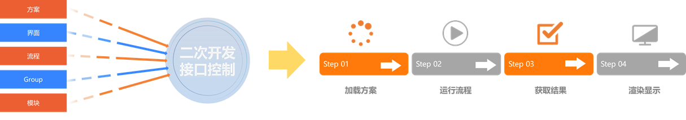

概述
VM算法平台SDK基于方案、流程和模块工具等进行对象级封装，可通过方案、流程和模块工具中各个对象的功能接口进行相应的数据交互与运行控制。同时提供相应的流程配置控件、参数配置控件、渲染控件、全局工具控件以及前端运行界面控件等，方便进行方案编辑、参数配置以及渲染展示，便于灵活进行开发，并扩展机器视觉应用。

|
| SDK各对象功能接口调用控制 |
SDK提供C++和C# 两套接口，同时分别提供两套接口的Demo，可参考Demo查看主要接口的使用方法。本文档主要介绍如何通过C# 接口调用VisionMaster算法平台SDK的外部接口。
注意事项
-
使用SDK前，需安装工业相机、加密狗等硬件设备的驱动。
-
杀毒软件可能将SDK识别为病毒，为方便使用，建议将VisionMaster算法平台加入杀毒软件的白名单中或关闭电脑上的杀毒软件。对于360安全卫士，建议关闭。